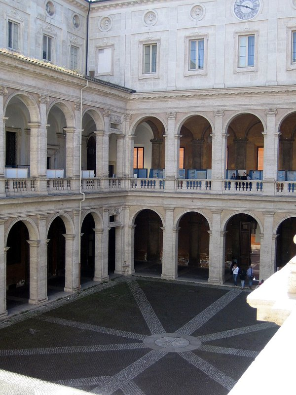

- 大学名
- Sapienza University of Rome
- 所在地
- ローマ／ラツィオ
- 情報確認日
- 2026年10月21日
どこにある大学？
ローマにある大学です。学部・専攻によって通学先が異なるため、志望課程のキャンパスを確認してください。
地図を読み込み中です。
大学・分野別ランキング
| 大学名 | 所在地 | QS 2027 | THE 2027 | ARWU 2026 |
|---|---|---|---|---|
| ローマラツィオ | 111位 ↗ | 147位 ↗ | 151–200位 ↗ |
同じ評価機関・年度で比較してください。順位は合格の難しさを直接示すものではありません。
入学条件・語学
人文科学から理工・医療分野まで幅広く学べる総合大学。英語課程は専攻ごとに確認できます。
高校から大学へ
学士課程は、高校の卒業資格・成績と、その課程の入学条件を確認します。入試や学力テストがある場合は、試験名・受験方法・締切も確認してください。
大学から大学院へ
修士課程は、学士の専攻・履修科目・成績、語学力などが審査対象です。必要に応じて志望理由書・推薦状・作品集・面接があります。
英語・イタリア語
英語課程とイタリア語課程では必要な証明が異なります。IELTS・TOEFLなどの最低点や免除条件は、同じ大学でも課程ごとに異なります。
出願から入学まで
| 順番 | すること |
|---|---|
| 1 | 大学公式で課程・授業言語・応募資格を確認 |
| 2 | 語学証明・成績証明・卒業証明などを準備 |
| 3 | 大学の指定窓口に出願し、試験・面接があれば受験 |
| 4 | 入学許可後、対象者はUniversitalyで事前登録 |
| 5 | 住居・資金・保険を準備し、必要なビザを申請 |
| 6 | 渡航後の滞在手続きと大学登録を完了 |
大学の出願締切と、Universitaly・ビザの締切は別です。入学許可だけでビザの発給が決まるわけではありません。
授業料・奨学金
授業料は、課程・国籍や居住区分・家族の所得証明・支援制度などにより異なります。申請しないと減免を受けられない場合もあります。授業料のほかに州税・印紙代等がかかることがあります。
予算の換算例：€1,000＝約18万円、€3,000＝約54万円（計画用の仮レート：€1＝180円）。大学の確定した請求額ではありません。
生活費・住居
ローマでの予算は、学生寮・シェアハウス・一人暮らしのどれを選ぶかで変わります。大学の住居案内で、家賃に光熱費が含まれるか、保証金や契約期間も確認してください。
予算を試算する例：家賃€500＋食費€250＋交通・通信・その他€150＝月€900（約16.2万円）。この大学・都市の相場や保証額ではなく、自分の費用を書き出すための計算例です。
現役生に聞く
現役生のプロフィールは準備中です。相談受付を開始したら、授業や住居探しなど本人の経験を聞けます。
学生プロフィールを見る